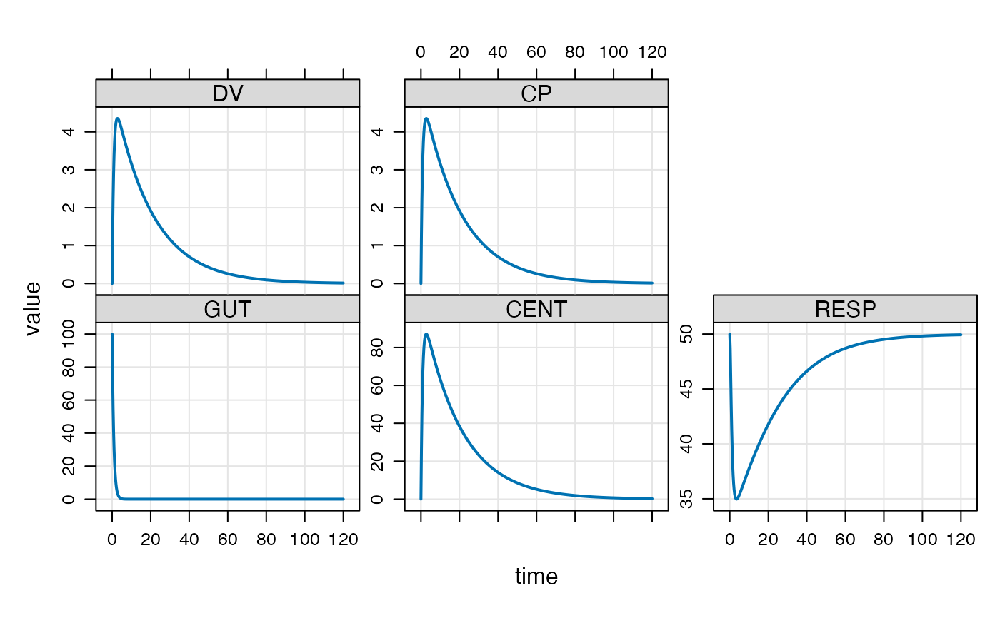

These methods help the user view simulation output and extract
simulated data to work with further. The methods listed here
for the most part have generics defined by R or other R packages.
See the seealso section for other methods defined
by mrgsolve that have their own documentation pages.
# S4 method for mrgsims $(x, name) # S4 method for mrgsims tail(x, ...) # S4 method for mrgsims head(x, ...) # S4 method for mrgsims dim(x) # S4 method for mrgsims names(x) # S4 method for mrgsims as.data.frame(x, row.names = NULL, optional = FALSE, ...) # S4 method for mrgsims as.matrix(x, ...) # S3 method for mrgsims summary(object, ...) # S4 method for mrgsims show(object)
| x | mrgsims object |
|---|---|
| name | name of column of simulated output to retain |
| ... | passed to other functions |
| row.names | passed to |
| optional | passed to |
| object | passed to show |
Most methods should behave as expected according to other method commonly used in R (e.g. head, tail, as.data.frame, etc ...)
$ selects a column in the simulated data and
returns numeric
head see head.matrix; returns
simulated data
tail see tail.matrix; returns
simulated data
dim, nrow, ncol returns dimensions,
number of rows, and number of columns in simulated data
as.data.frame coerces simulated data to data.frame
and returns the data.frame
as.matrix returns matrix of simulated data
summary coerces simulated data to data.frame
and passes to summary.data.frame
plot plots simulated data; see plot_mrgsims
#> [1] "mrgsims" #> attr(,"package") #> [1] "mrgsolve"#> ID time GUT CENT RESP DV CP #> 1 1 0.00 100.00000 0.00000 50.00000 0.000000 0.000000 #> 2 1 0.25 74.08182 25.74883 48.68223 1.287441 1.287441 #> 3 1 0.50 54.88116 44.50417 46.18005 2.225208 2.225208 #> 4 1 0.75 40.65697 58.08258 43.61333 2.904129 2.904129 #> 5 1 1.00 30.11942 67.82976 41.37943 3.391488 3.391488 #> 6 1 1.25 22.31302 74.74256 39.57649 3.737128 3.737128#> ID time GUT CENT RESP DV CP #> 476 1 118.75 9.202240e-44 0.2753340 49.92950 0.01376670 0.01376670 #> 477 1 119.00 5.342789e-44 0.2719137 49.93038 0.01359569 0.01359569 #> 478 1 119.25 2.453278e-44 0.2685360 49.93124 0.01342680 0.01342680 #> 479 1 119.50 2.498865e-44 0.2652002 49.93209 0.01326001 0.01326001 #> 480 1 119.75 1.869677e-44 0.2619058 49.93293 0.01309529 0.01309529 #> 481 1 120.00 1.163038e-44 0.2586523 49.93377 0.01293262 0.01293262#> [1] 481 7#> [1] "ID" "time" "GUT" "CENT" "RESP" "DV" "CP"